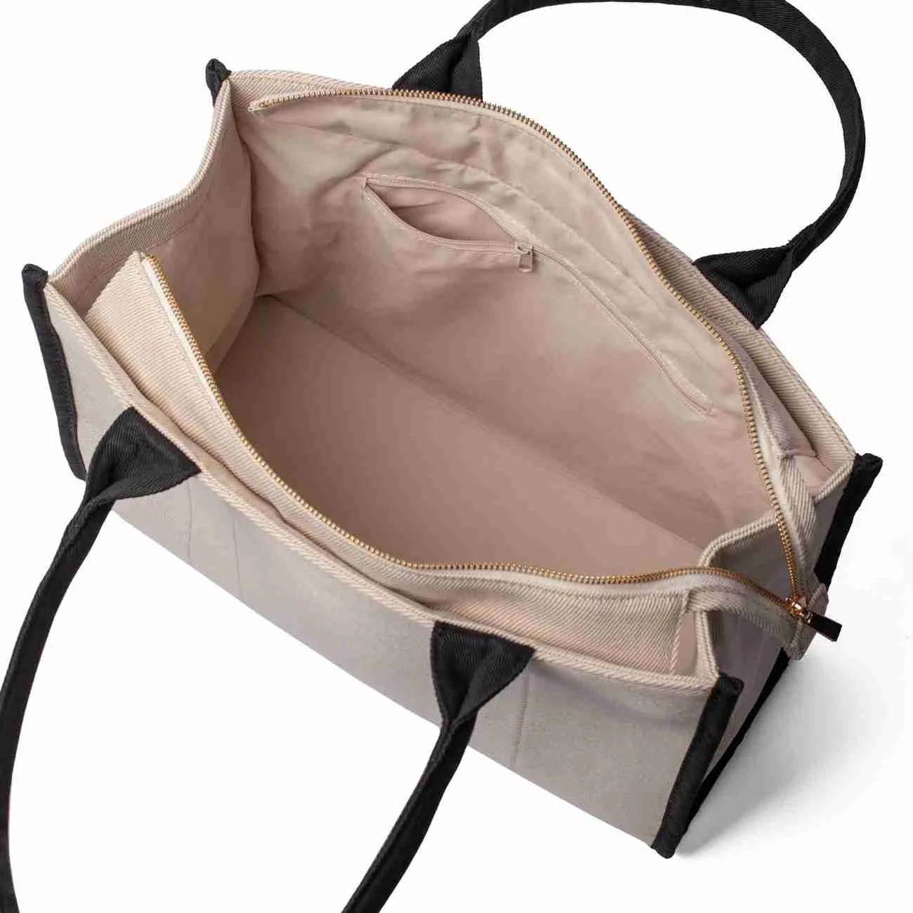

Jawaban singkat: Totebag untuk kuliah adalah tas jinjing praktis yang dirancang bagi mahasiswa untuk membawa buku, binder, alat tulis, laptop, dan perlengkapan harian dengan memprioritaskan ketahanan bahan kain, dimensi ruang utama, kekuatan jahitan tali bahu, serta sistem penutup pengaman.
Ringkasan Inti Panduan
- Totebag berbahan kanvas marsoto dan twill menjadi opsi favorit mahasiswa karena memiliki karakter kain yang tebal, kuat, dan berstruktur kokoh.
- Ukuran tas ideal untuk kuliah berkisar antara 35x40 cm dengan gusset bawah 8-10 cm agar mampu menampung laptop 14 inci serta binder kuliah tanpa merusak bentuk tas.
- Kompartemen saku tambahan dan penutup resleting (zipper) sangat krusial untuk menjaga barang kecil tetap rapi serta aman saat naik transportasi umum.
- Kekuatan jahitan sambungan tali wajib menggunakan pola stik ganda atau bar-tack agar tidak sobek saat menopang beban berat buku diktat.
- Pencucian manual tanpa pemutih keras membantu menjaga warna kain dan keutuhan sablon grafis tetap awet bertahun-tahun.

Apa Itu Totebag untuk Kuliah?
Totebag untuk kuliah merupakan tas jinjing berbentuk simpel dengan dua tali bahu paralel yang dirancang khusus untuk membawa perlengkapan perkuliahan harian. Tas ini memfasilitasi mahasiswa membawa buku catatan, modul praktikum, laptop, tumbler minum, dompet, kabel charger, hingga perlengkapan pribadi dalam satu ruang utama yang praktis.
Berbeda dari ransel konvensional yang kaku, totebag menawarkan siluet yang lebih santai, ringan, dan bernuansa modern. Desainnya yang minimalis membuat tas ini fleksibel dipadukan dengan berbagai gaya pakaian: mulai dari kemeja flanel berkerah untuk presentasi di kelas, kaus kasual saat nongkrong di kafe, hingga jaket almamater saat rapat organisasi kemahasiswaan.
Di Totebag Malang (CV. Saudagar Kaya Abadi), totebag untuk mahasiswa diproduksi menggunakan material kain pilihan seperti kanvas marsoto, kanvas twill, kain drill berkualitas, hingga corduroy vintage dengan standar jahitan kokoh yang telah diuji beban.
Mengapa Totebag Cocok untuk Aktivitas Perkuliahan?
Ada beberapa alasan mendasar mengapa totebag bertransformasi dari sekadar tas belanja menjadi tas harian utama bagi mahasiswa di berbagai universitas besar:
1. Akses Cepat dan Praktis
Bukaan atas yang lapang memungkinkan mahasiswa mengambil binder, bolpoin, atau modul kuliah dalam hitungan detik tanpa repot membuka banyak ritsleting kompartemen rumit.
2. Estetika Minimalis dan Modern
Tampilan totebag tidak pernah ketinggalan zaman. Warna-warna netral seperti broken white, hitam, army, khaki, dan navy mudah menyatu dengan ragam outfit kampus.
3. Fleksibilitas Mobilitas Tinggi
Sangat nyaman dibawa berpindah-pindah lokasi: dari ruang kelas ke perpustakaan kampus, kerja kelompok di *coworking space*, hingga kegiatan ekstrakurikuler sore hari.
4. Media Ekspresi Diri & Komunitas
Dapat dipesan secara custom dengan cetak sablon logo jurusan, ilustrasi grafis estetik, kutipan sastra, atau identitas kepanitiaan seminar kampus.
Bagaimana Cara Memilih Totebag untuk Kuliah yang Tepat?
Agar tas tidak cepat rusak dan pundak Anda tidak pegal saat beraktivitas seharian, perhatikan 6 parameter penting berikut saat memilih totebag kampus:
- Sesuaikan Dimensi Ruang dengan Ukuran Laptop: Ukuran tas bagian dalam adalah kunci. Bila Anda membawa laptop 13–14 inci, pilih tas berdimensi minimal panjang 36 cm dan tinggi 38 cm dengan gusset (alas lebar) 8–10 cm. Jangan membeli tas yang hanya lebar di luar tetapi pipih di bawah, karena barang akan bertumpuk dan mendesak jahitan samping.
- Pilih Material Kain yang Memiliki Gramasi Pas: Hindari kain blacu tipis tanpa furing untuk membawa laptop. Prioritaskan bahan kanvas katun atau kain drill tebal yang memiliki ketahanan sobek tinggi serta tidak mudah melar saat dibebani buku tebal.
- Cek Sambungan Jahitan Tali (Cross-Stitch atau Bar-Tack): Area paling rawan rusak pada totebag adalah titik temu tali dengan bodi kain. Pastikan sambungan dijahit dengan pola jahitan silang kotak (*x-box stitch*) atau jahitan pengunci bar-tack yang rapat.
- Pilih Tali Bahu dengan Lebar Minimal 3–3,5 cm: Tali yang terlalu tipis (di bawah 2,5 cm) akan terasa menyayat kulit pundak ketika tas berisi laptop dan botol minum. Lebar tali ideal berkisar 3–4 cm untuk mendistribusikan tekanan secara merata di pundak.
- Pertimbangkan Fitur Kompartemen Internal: Saku kecil di bagian dalam sangat berguna untuk menyelipkan KTM (Kartu Tanda Mahasiswa), kunci motor, kabel charger, dan flashdisk agar tidak tercecer di dasar tas.
- Pilih Sistem Penutup yang Sesuai Rutinitas: Jika Anda sering berjalan kaki di area ramai atau menggunakan transportasi umum seperti angkutan kota, KRL, atau Trans, pilih model dengan penutup resleting logam YKK atau kancing magnet rapat demi keamanan barang bawaan.

Bahan Totebag Apa yang Cocok untuk Kuliah?
Kualitas bahan menentukan seberapa lama totebag Anda mampu bertahan menemani masa perkuliahan. Berikut karakteristik material kain terbaik yang umum digunakan konveksi tas:
1. Kanvas Marsoto
Memiliki tekstur bintik rapat dengan ketebalan 12–14 Oz. Karakter bahannya kaku, kokoh, dan tas bisa berdiri tegak meskipun dalam keadaan kosong. Sangat tahan gesekan dan sangat awet untuk membawa laptop.
2. Kanvas Twill
Memiliki anyaman serat diagonal yang lentur namun padat. Teksturnya lebih halus dibanding marsoto sehingga sangat nyaman menempel di badan saat disampirkan di bahu seharian.
3. American & Japan Drill
Pilihan populer untuk totebag semi-formal dan seragam organisasi kampus. Bahan drill memiliki jalinan benang kuat, pilihan warna sangat variatif, dan tahan pencucian berulang kali tanpa mudah luntur.
4. Blacu Super Unbleached
Kain katun mentah dengan warna broken white natural. Cocok untuk totebag berbobot ringan, seminar kampus, dan gaya kasual bernuansa retro. Tidak disarankan untuk membawa laptop berat tanpa busa pelindung.
5. Corduroy Ribbed 90s
Kain dengan jalur garis timbul beludru yang sangat estetik. Menjadi primadona mahasiswa seni, desain, dan humaniora yang menyukai gaya busana vintage atau streetwear distro.
6. Poly-Canvas (Dinir D300 / D600)
Kain sintetis berbahan polyester dengan lapisan coating anti air (*water-repellent*). Sangat membantu melindungi buku catatan dari rintik gerimis saat musim hujan tiba.
Untuk penjelasan komparasi teknis yang lebih detail antar bahan tekstil, Anda dapat membaca panduan kami di Perbandingan 11 Bahan Tas Lengkap serta Karakteristik 11+ Jenis Bahan Totebag Custom.
Tabel Rekomendasi Bahan Totebag Mahasiswa
Berikut adalah tabel ringkasan perbandingan spesifikasi bahan totebag kuliah untuk membantu Anda memilih material paling cocok sesuai kebutuhan aktivitas harian:
| Jenis Bahan | Karakter Tekstur | Kekuatan Beban | Kecocokan Laptop | Gaya Outfit | Rekomendasi Penggunaan |
|---|---|---|---|---|---|
| Kanvas Marsoto | Tebal, kaku, serat bintik padat | Hingga 12–15 kg | Sangat Cocok | Casual, Streetwear, Workwear | Membawa laptop 14–15 inci + buku tebal harian |
| Kanvas Twill | Lentur, halus, serat diagonal | Hingga 8–10 kg | Cocok | Korean Style, Smart Casual | Kuliah reguler, ke kafe, nongkrong santai |
| Japan Drill | Rapat, licin halus, warna awet | Hingga 7–10 kg | Cukup Cocok | Semi-formal, Preppy Look | Kegiatan organisasi, magang kantor, seminar |
| Corduroy | Bergaris timbul beludru empuk | Hingga 6–8 kg | Cukup Cocok | Vintage 90s, Indie Aesthetic | Fashion kampus harian, kuliah santai |
| Poly-Canvas / Dinir | Sintetis, ada lapisan tolak air | Hingga 10–12 kg | Sangat Cocok | Sporty, Casual Outdoor | Mobilitas motor saat musim hujan |
| Blacu Super | Ringan, berserat kapas alami | Maksimal 4–5 kg | Kurang Cocok | Eco-minimalist, Artsy | Kuliah praktis (hanya binder & alat tulis) |
Model Totebag Apa yang Menarik untuk Mahasiswa?
Tren model totebag di kalangan mahasiswa terus berkembang mengikuti kebutuhan fungsional dan estetika media sosial:
- Totebag Minimalis Polos: Desain tanpa sablon dengan potongan bersih. Memberikan kesan *effortless chic* yang sangat mudah dipadukan dengan kemeja kuliah warna apapun.
- Totebag Graphic / Aesthetic: Dilengkapi sablon tipografi kutipan inspiratif, ilustrasi seni garis (*line art*), atau karakter kartun favorit menggunakan teknik cetak sablon presisi beresolusi tajam.
- Totebag Zipper (Resleting Penuh): Dilengkapi resleting YKK pada bibir tas untuk proteksi menyeluruh terhadap tumpahan barang atau air hujan ringan.
- Totebag Dua Saku Depan: Memiliki dua kantong luar untuk menyimpan botol minum tumbler dan payung lipat tanpa memakan ruang kompartemen laptop di dalam.
- Totebag 2-in-1 (Convertible): Memiliki tali selempang panjang (*sling bag*) sekaligus tali bahu standar, sehingga dapat dibawa dengan 2 cara berbeda saat lelah menopang di satu pundak.
Tabel Komparasi Sistem Penutup Tas Kuliah
Pilihan sistem penutup memengaruhi tingkat keamanan dan kecepatan Anda mengambil barang di ruang kuliah:
| Sistem Penutup | Kemudahan Akses | Keamanan Barang | Ketahanan Fisik | Karakter Penggunaan |
|---|---|---|---|---|
| Open-Top (Tanpa Penutup) | Sangat Cepat | Rendah | Sangat Tinggi (tanpa komponen rusak) | Acara santai, belanja buku perpustakaan |
| Kancing Magnetik | Cepat & Praktis | Sedang | Tinggi (magnet tidak berkarat) | Kuliah harian di kampus yang tenang |
| Resleting / Zipper | Sedang (butuh ditarik) | Sangat Tinggi | Tergantung kualitas rel resleting | Transportasi umum, bawa laptop & dompet |
| Velcro (Kretek) | Cepat | Sedang | Sedang (daya rekat berkurang seiring waktu) | Saku luar perlengkapan kecil |
Apakah Totebag Aman untuk Membawa Laptop?
Secara umum, totebag aman digunakan untuk membawa laptop dengan catatan bahwa konstruksi tas mendukung beban dan Anda menerapkan proteksi tambahan. Totebag bukan tas laptop militer berkulit keras, sehingga Anda perlu menerapkan 5 langkah pengamanan berikut:
- Selalu Gunakan Laptop Sleeve (Pouch Busa): Jangan pernah memasukkan laptop telanjang langsung ke dalam totebag. Lapisan sleeve busa 5mm melindungi sudut laptop dari benturan ketika tas diletakkan di lantai kelas atau meja kafe.
- Pilih Totebag yang Memiliki Lebar Alas (Gusset): Tas dengan alas berdimensi 8–10 cm memberikan ruang bagi laptop untuk duduk stabil di dasar tas tanpa menarik kain bodi hingga melar tegang.
- Pastikan Jahitan Tali Diperkuat: Laptop rata-rata memiliki bobot 1,3–2,2 kg (belum termasuk charger dan buku). Pastikan totebag Anda memiliki jahitan stik ganda yang mampu menahan tarikan beban tersebut.
- Posisi Laptop Menempel ke Sisi Badan: Saat tas disampirkan di bahu, posisikan laptop berada di sisi yang paling dekat dengan pinggul Anda agar pusat gravitasi beban stabil dan tas tidak terayun-ayun saat berjalan cepat.
- Hindari Memasukkan Tumbler Air di Kompartemen yang Sama: Jika membawa botol minum, pastikan botol tertutup rapat sempurna atau gunakan totebag dengan sekat saku botol terpisah demi menghindari kebocoran mengenai laptop.

Kesalahan yang Sering Terjadi Saat Memilih Totebag Kuliah
Banyak mahasiswa baru yang terburu-buru membeli tas hanya karena foto produk di media sosial terlihat menarik. Hindari 5 kesalahan umum ini:
- Tergiur Harga Terlalu Murah Tanpa Cek Bahan: Totebag harga belasan ribu rupiah umumnya menggunakan kain blacu tipis tanpa obras dalam. Baru dipakai satu semester membawa binder tebal, tali tas sudah putus.
- Mengabaikan Panjang Tali Bahu (*Drop Length*): Tali yang terlalu pendek (*drop* di bawah 22 cm) akan membuat tas terjepit di ketiak, terutama saat Anda mengenakan jaket tebal atau sweater hoodie. Pilihlah tali dengan *drop length* 26–30 cm.
- Tidak Memeriksa Jahitan Obras Dalam: Bagian dalam tas yang tidak diobras rapi akan membuat serat kain berserabut dan mengotori casing laptop atau buku catatan Anda.
- Membawa Beban Overload Tanpa Sadar: Menjejalkan laptop 15 inci, charger, 3 buku referensi tebal, botol air 1 liter, dan payung ke dalam satu totebag kanvas tipis akan membuat leher dan pundak mengalami cedera otot (*muscle strain*).
- Mencuci Menggunakan Mesin Cuci Kasar: Putaran mesin cuci berkecepatan tinggi dapat merusak serat kanvas katun dan melunturkan sablon grafis lebih cepat.
Bagaimana Cara Merawat Totebag agar Lebih Awet?
Dengan perawatan yang cermat, sebuah totebag kanvas berkualitas dapat bertahan hingga Anda lulus kuliah. Terapkan 7 panduan perawatan praktis ini:
- Kosongkan Seluruh Isi Tas Terlebih Dahulu: Balikkan bagian dalam tas keluar untuk membersihkan remah-remah kotoran, debu, atau sisa rautan pensil di sudut kompartemen.
- Bersihkan Noda Ringan Secara Terlokalisir (*Spot Cleaning*): Jika hanya terkena cipratan kopi atau debu jalanan, gosok lembut area noda menggunakan kain mikrofiber basah dan sedikit sabun cair, tanpa perlu merendam seluruh tas.
- Gunakan Air Dingin Saat Mencuci: Hindari air panas karena dapat menyebabkan serat kain katun menyusut (*shrinkage*) dan membuat tekstur kanvas berkerut kasar.
- Gunakan Sikat Gigi Bekas Berbulu Lembut: Untuk membersihkan noda membandel pada sudut jahitan bawah, sikat perlahan searah serat kain. Jangan gunakan sikat cuci baju berbahan kawat atau plastik kaku.
- Jangan Gunakan Pemutih Klorin: Cairan pemutih akan melarutkan pigmen warna asli kain dan merapuhkan rajutan benang tali tas.
- Jemur di Tempat Teduh yang Berangin: Jangan jemur langsung di bawah terik matahari siang yang menyengat agar warna kain tidak pudar dan sablon tidak mengering retak.
- Simpan dalam Keadaan Bersih dan Kering: Saat libur semester, simpan totebag dengan memasukkan gumpalan kertas bersih ke dalamnya agar bentuk tas tetap kokoh dan tidak berjamur.
Bagaimana Memadukan Totebag dengan Outfit Kuliah?
Totebag adalah aksesori busana yang sangat fleksibel. Berikut beberapa inspirasi padu-padan gaya (*outfit styling*) untuk mahasiswa kampus:
1. Smart Casual (Untuk Presentasi & Ujian)
Padukan kemeja katun polos, celana chino warna khaki, sepatu loafers atau sneakers putih bersih dengan totebag kanvas hitam polos berpotongan tegas.
2. Korean Minimalist Look
Gunakan knit cardigan atau outer linen longgar, celana kulot flowy, dan totebag kanvas warna broken white bernuansa natural.
3. Streetwear & Indie Style
Padukan kaus oversized, jaket denim washed, celana kargo santai dengan totebag corduroy bertekstur vintage atau totebag sablon ilustrasi grafis.
4. Everyday Campus Comfort
Kombinasi kaus basic katun combed, celana jeans favorit, sepatu kets, dan totebag drill navy atau hitam yang tahan banting untuk jadwal kelas padat.
Di Mana Mahasiswa Bisa Menggunakan Totebag Custom?
Selain digunakan untuk pemakaian pribadi, totebag custom merupakan produk merchandise paling fungsional dan bernilai guna tinggi di lingkungan universitas. Beberapa kegiatan kampus yang rutin memproduksi totebag custom antara lain:
- Ospek & PKKMB Universitas: Paket kit perlengkapan mahasiswa baru berisi buku panduan, map orientasi, dan seminar kit.
- Seminar Nasional & Workshop Akademik: Tas souvenir eksklusif berbahan drill atau kanvas bagi peserta dan pemateri seminar.
- Merchandise Himpunan Mahasiswa (Hima/BEM): Identitas kebanggaan jurusan dengan sablon logo lembaga dan nama angkatan.
- Pelepasan & Wisuda Mahasiswa: Hadiah kenang-kenangan fungsional bagi wisudawan yang dapat dipakai bekerja nantinya.
- Bazar Kampus & Penggalangan Dana: Menjual merchandise kreatif karya mahasiswa seni dan desain untuk pendanaan kegiatan.
Bagi Anda yang berencana memesan totebag custom untuk kepanitiaan kampus dengan pagu anggaran hemat, simak panduan perhitungan biaya kami di Panduan Lengkap Minimal Order (MOQ) Tote Bag Custom untuk mendapatkan harga grosir konveksi terbaik.
FAQ Seputar Totebag untuk Kuliah
Kesimpulan Praktis
Totebag untuk kuliah adalah solusi tas harian yang memadukan fungsi praktis, daya tahan fisik, dan gaya berpakaian kasual yang modern. Kunci keberhasilan memilih totebag yang tepat terletak pada kesesuaian antara spesifikasi bahan kain (seperti kanvas marsoto atau twill tebal), dimensi ruang utama ber-gusset untuk laptop, serta konstruksi jahitan tali bar-tack yang kokoh menahan beban berat.
Dengan perawatan pencucian yang benar, totebag Anda tidak hanya awet menemani jadwal kuliah dari semester awal hingga skripsi, tetapi juga menjadi representasi gaya hidup mahasiswa yang dinamis, rapi, dan fungsional.
Bagi panitia organisasi kampus, himpunan mahasiswa, maupun institusi universitas di Malang dan seluruh Indonesia yang ingin memesan totebag custom bersablon logo dengan kualitas teruji, silakan berkonsultasi langsung bersama tim konveksi Totebag Malang.